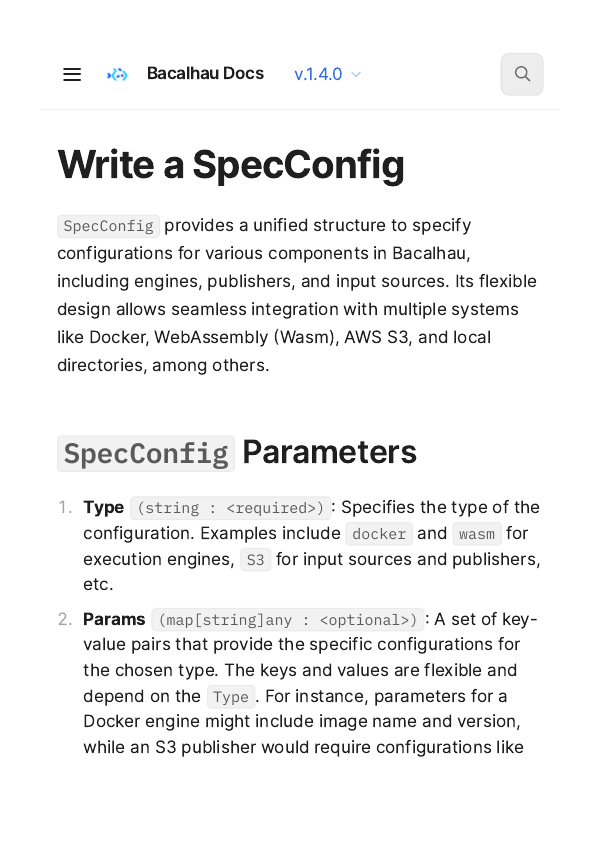
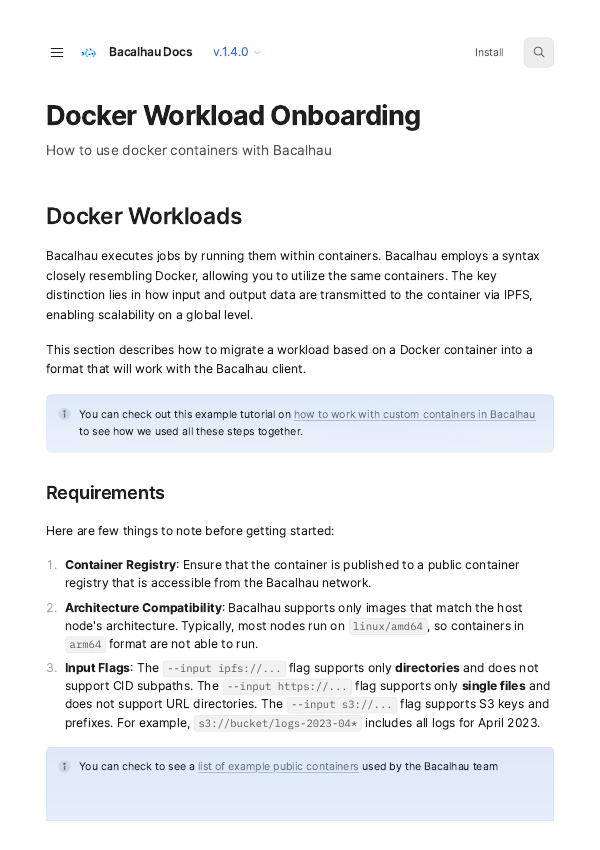

About my working environment
I'm Favour a former software developer turned technical writer. I enjoy working on developer documentation using a docs-as-code workflow. My interests include API documentation, writing documentation that works well for AI systems, experimenting with documentation tooling, and fixing messy documentation sets.
I also contribute to open source documentation projects. I'm always learning something new because I like improving how documentation is built and maintained. If I'm not learning or solving problems, I start getting restless. Probably the same way a Husky does when it hasn't been walked.
Where I thrive
Short version
Give me ownership of a documentation problem and trust me to solve it. Let me improve the structure, the tooling, and the process so developers can find answers faster.
Give me room to learn, experiment, and sharpen my skills. Tell me when I'm doing well and when something needs to improve.
Long version
I do my best work in environments where I'm trusted to take ownership and figure out the best way to solve a problem.
I prefer a management style where my manager helps remove blockers, gives direction when needed, and trusts me to handle the details without micromanaging.
I like having real ownership over the documentation and the systems around it. Frequent feedback and opportunities to keep learning are important to me. I work best in teams where people are encouraged to grow and improve over time.
Skills & technologies
I have extensive docs-as-code experience and specialise in developer-focused documentation. I've leaned into AI-augmented technical writing and writing for AI readers, and I'm embracing the new kind of knowledge engineering role that AI technology has created.
Deliverable types
- API references
- SDK guides
- CLI documentation
- Getting started guides
- How-to guides and tutorials
- Architecture and whitepapers
- Release notes
- Internal documentation
- Style guides
- Blog posts and newsletters
Tools & technologies
- Markdown, HTML, CSS
- Git, GitHub, GitLab
- CI/CD pipelines
- REST APIs, OpenAPI, JSON-RPC
- Postman, cURL
- Docusaurus, ReadMe, Mintlify, Nextra, MkDocs
- Python, JavaScript (basic)
- AI tools and augmentation
- Confluence, Jira
- Vale linting
Strengths
- Getting developers from question to answer fast
- Cross-functional collaboration
- Finding documentation gaps proactively
- Docs-as-code workflows
- Remote and async environments
- Open source contribution
- Leading doc migrations and restructures
- Writing for AI consumption
- API testing before writing
Work history
I spent 8 months at Orbital, a global payments platform handling stablecoins, fiat, and 80+ exotic currencies. I was hired to help fix a documentation problem the API docs were sitting in Postman, unmaintained and out of date, the knowledge base relied heavily on screenshots, and there was no process for how any of it got written or updated.
The work
The first thing I tackled was consolidation. The API documentation was in Postman and had not been kept up to date. I migrated everything into ReadMe so the API reference and knowledge base lived in one unified place.
From there I rebuilt the Merchant Payments API restructured around real integration flows, with request and response schemas, authentication flows, error handling, and syntax-highlighted code samples all tested against the live API. I introduced ReadMe Recipes so developers could follow complete workflows instead of jumping between isolated endpoint pages.
On the knowledge base side I replaced image-heavy pages with structured markdown, built out the Client Portal how-to guides, and redesigned the information architecture so the API reference, product docs, and knowledge base felt like one system. I created a Documentation Hub to unify access across everything.
I also introduced a proper documentation process branching and review workflows, Jira task tracking, and direct alignment with developers so documentation was part of the build, not an afterthought. I worked with PMs on upcoming features, and collaborated with the integration team, support team, and marketing on release notes and feature launches including the Binance Pay integration and mass payout feature.
Highlights
- Migrated API docs from Postman into ReadMe one unified location for API reference and knowledge base
- Rebuilt the Merchant Payments API with structured endpoints, schemas, and code samples
- Introduced ReadMe Recipes for task-based, workflow-driven documentation
- Replaced image-heavy knowledge base pages with structured markdown
- Built Client Portal documentation end to end
- Redesigned information architecture across the full docs site
- Set up branching, review, and planning process documentation as part of the build
- Worked across integration, support, marketing, and engineering teams
Writing samples
I spent nearly two years at Calimero, a protocol built on NEAR. The product went through a significant pivot during my time there starting as a private sharding platform and evolving into a framework for building peer-to-peer self-sovereign applications focused on data ownership and off-chain computing. I documented both phases.
The work
Calimero had an existing documentation site when I joined, built on Docusaurus. I worked on the initial version of the documentation during the private sharding era writing new content, documenting features as they shipped, and keeping the docs in sync with the product.
As the product pivoted, the docs moved to MkDocs to match the new direction. I continued documenting through the transition writing SDK references for JavaScript and Rust, node configuration, identity management, and WASM integration guides. I also wrote Zendesk support documentation and contributed to the Calimero Chat project a decentralised communication app built on the platform that has since been deprecated.
Beyond the technical docs I wrote product and ecosystem blogs covering new features and developer education for the NEAR community.
Highlights
- Documented across two versions of the platform Docusaurus (private sharding) and MkDocs (data sovereignty pivot)
- Worked on the initial version of the documentation during the private sharding era
- Wrote JavaScript and Rust SDK references maintained over nearly two years
- Documented Calimero Chat end to end
- Wrote Zendesk support documentation
- Produced product and ecosystem blogs for the NEAR developer community
- Kept documentation in sync through a major product pivot
Writing samples
From the private sharding era recovered via Wayback Machine (blogs only):
- Step-by-step guide: deploying your dapp on Calimero private shards
- Zero knowledge proof
- Bridge fungible tokens
- Private blockchain event hooks
- Introducing Workspaces in Calimero
From the data sovereignty era:
I started contributing to Bacalhau as an open source contributor before being brought on as a contractor to work on the documentation full time. Bacalhau is a distributed compute platform built by Protocol Labs the team behind IPFS and Filecoin that lets you run jobs over data where it lives rather than moving it first. My work on the docs contributed to the release of Bacalhau v1, which played a key role in the platform's acquisition by Expanso, a data orchestration and governance company.
The work
I used the Diátaxis framework to structure the documentation separating tutorials, how-to guides, conceptual explanations, and reference specs so developers could find what they needed without guessing. I worked directly with engineers to document features as they shipped, covering the REST API, Docker workload onboarding, WASM workload onboarding, getting started guides, and the Python SDK.
I also ran a newsletter on Substack covering product updates, new features, and practical how-to guides for the Bacalhau community. The newsletter grew from 116 to 2K email deliveries. Docs traffic grew from 10K to 47K views during my contract.
Highlights
- Started as an open source contributor before being hired as a contractor
- Structured documentation using Diátaxis framework
- Documented Bacalhau v1 release end to end
- Documented the REST API, Docker workloads, WASM workloads, and Python SDK
- Ran Substack newsletter grew from 116 to 2K email deliveries
- Docs traffic grew from 10K to 47K views
- Documentation contributed to acquisition by Expanso
Writing samples
- Docker Workload Onboarding
- Write a SpecConfig
- Getting Started with Bacalhau
- WASM Workload Onboarding
- Observability
- Bacalhau Updates newsletter
- Unleash the power of GPUs for Docker
- Reading and writing from any S3-compatible data store
Commits
I spent 9 months at Mindee, a company that builds OCR and document parsing APIs that extract structured data from invoices, receipts, IDs, and other documents. I was hired as a technical writer to improve and maintain their documentation in ReadMe.
The work
I hit the ground running resolving over 20 documentation issues in my first month. I filled gaps, improved clarity, and tested everything against the live API and Mindee's interface before publishing. I moved SDK documentation that had been sitting in private GitHub repos into the main docs site so developers could find everything in one place.
I documented new features as they shipped and kept release notes consistent so developers could track API changes between versions without guessing. Beyond the docs I ran the product newsletter, covering product updates, new features, and announcements. I also wrote product blogs on new feature releases and practical usage guides to help users adopt the product.
Highlights
- Resolved 20+ documentation issues in the first month
- Moved scattered SDK docs from private GitHub repos into the main documentation site
- Tested all APIs against the live interface before publishing
- Documented new features on launch
- Created consistent release notes format from scratch
- Ran the product newsletter and wrote product blogs
Writing samples
Open source / short gigs
TON is a third-generation proof-of-stake blockchain. The core architecture lived across dense LaTeX whitepapers technically rigorous but impossible to reference while actually building. No web version, no navigation, no cross-linking.
The work
I converted multiple whitepapers into structured web-native documentation using Mintlify the TON Blockchain whitepaper, TVM specification, Catchain Consensus protocol, and TL-B serialization spec. I preserved the mathematical notation while adding navigation and cross-references so developers could move between documents without losing context.
I also worked on the TVM specification project built a TypeScript schema to replace the manual JSON spec, wrote Python scripts to parse C++ source files and auto-populate implementation references, and defined a versioning policy to keep the instruction docs in sync with the codebase.
Writing samples
Commits
GlueOps is a DevOps platform that simplifies deployments across cloud providers. This was a short contract to set up their documentation from scratch. Everything was scattered across GitHub repos and internal notes users couldn't onboard without jumping on a call.
The work
I set up their first documentation site using Docusaurus and wrote the initial user documentation. This covered Getting Started guides for administrators and developers, and deployment docs for Docker Hub, GCP, GitHub, AWS, Azure, Terraform, and Quay. I also configured the Dockerfile and GitHub workflows so the team could maintain the docs going forward.
Writing samples
Commits
Writing samples
 API reference
API referenceGenerate Deposit Link (HPP)
API endpoint for generating hosted payment page deposit links with request/response schemas and auth flows.
 API reference
API referenceVerify Webhook Signatures
Security guide for validating webhook payloads to ensure requests originate from Orbital.

API referenceWrite a SpecConfig
Job specification reference for defining compute jobs, inputs, outputs, and execution parameters.
 API reference
API referenceJSON-RPC API
Complete JSON-RPC API reference for interacting with the GenLayer simulator and deploying intelligent contracts.
 SDK reference
SDK referenceJavaScript SDK
JS SDK reference for interacting with Calimero private shards and managing data sharing.
 SDK reference
SDK referenceRust SDK
Rust SDK documentation for building and deploying applications on Calimero private shards.
 SDK reference
SDK referencePython SDK Getting Started
Moved SDK docs from private GitHub repos into official documentation with installation, auth, and response structure guides.
 CLI reference
CLI referenceGenLayer CLI Reference
CLI documentation for project init, simulator management, contract deployment, and local development workflows.

Developer guideDocker Workload Onboarding
How Docker containers execute as Bacalhau jobs job specs, inputs, and data handling end to end.
 Integration guide
Integration guideEmbedded Payment Page Setup
Step-by-step guide for embedding Orbital's payment widget, configuring options, and handling the payment flow.
 Feature guide
Feature guideCropper Utility Guide
How-to guide for using the Cropper utility to preprocess and crop documents before OCR parsing.
 _ GlueOps.png) Infrastructure guide
Infrastructure guideAWS Cloud Setup Guide
Step-by-step guide for creating and configuring an AWS account for the GlueOps platform.
 Blockchain Specification - TON Docs.png) Whitepaper
WhitepaperTON Blockchain Specification
Dense LaTeX whitepaper converted into navigable web documentation covering sharding and masterchain mechanics.
 VM spec
VM specTON Virtual Machine
TVM architecture, instruction set, and execution model documented with preserved mathematical notation.
 Protocol spec
Protocol specCatchain Consensus
Consensus protocol specification converted from LaTeX into structured, cross-referenced web documentation.
 Protocol docs
Protocol docsIntelligent Contracts
Core concept documentation explaining AI-powered smart contracts and how they differ from traditional contracts.
 Enterprise config
Enterprise configSetting up SAML SSO
Enterprise guide for configuring SAML SSO authentication in Vertice for identity provider integration.
 Release notes
Release notesInvoice OCR Release Notes
Structured release notes documenting new fields, model updates, and breaking changes per version.
Streamline Data Projects with Bacalhau Python SDK
Tutorial on using the Python SDK to submit and manage distributed compute jobs programmatically.
Unleash the power of GPUs for Docker
How to run GPU-accelerated Docker workloads on the Bacalhau distributed compute network.
TIFF & HEIC Media Files Now Supported
Feature announcement covering new image format support and how to use them with Mindee APIs.